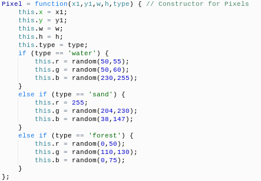
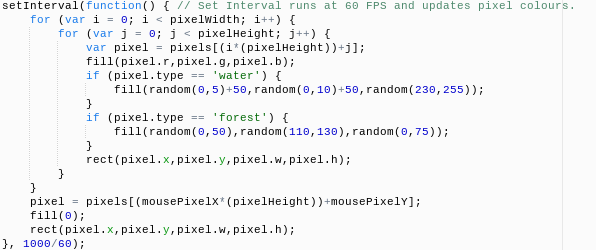

What I Created
YEEETI created a system that procedurally generates islands onto an ocean and maps the mouse's location. Each pixel is an object that is indexed in an array depending on its location.
How It Works

The Pixel System
YEEETThe array pixels is used to store the information for each pixel. Each pixel is created using the Pixel constructor (right). It takes five parameters: x location, y location, height, width, and type. For all of the parameters, the contructor passes it on to the new object's properties of the same name. For type, the constructor also checks the value of type against different possible things. It will then create a suitable colour depending on the type (blue for water, green for forest, etc.). The pixels objects are then stored at a location using the method in the following table:
| 0 |
3 |
6 |
9 |
12 |
| 1 |
4 |
7 |
10 |
13 |
| 2 |
5 |
8 |
11 |
14 |
YEEETIf
j equals which row, and
i equals which column, then the index of a pixel based on its location could be found with
pixelIndex = i*(columnLength) + j. This assumes that
i and
j start at 0 in the top-left box (which they do in my code).
Procedurals
YEEETThe art procedurally generates tiles. That is to say, it generates differently depending on its surroundings. This code checks to see if the top and left blocks (which were already generated) are water, and then sets the probabilities:
if (pixels[(((i+0)*(pixelHeight))+j-1)].type == 'water' && pixels[(((i-1)*(pixelHeight))+j+0)].type == 'water') { // Top and Left are Water
pixelType = 'water';
}
YEEETThe if statment checks if the pixel above (j-1) and the pixel to the left (i-1) have the type water. If they do, it sets the current pixel being generated to be water. There a several other other conditions: both sand, both forest, one forest (but not both), or one sand & one water. Each changes the chances of each type of tile.
pixels[(i*(pixelHeight))+j] =
new Pixel((i*pixelScreenSize),(j*pixelScreenSize),pixelSize,pixelSize,pixelType);
YEEETThis code finds the index that the pixel belongs to and then uses the Pixel constructor to create a new pixel at that location in the array. Because the pixels are created using two nested for loops (one for x and one for y), the location can be determined using i and j (the variables in the for loop arguments). It sends the height and width as the pixel's size (pre-defined - this is just for scalability) and then sends the determined pixel type. But the pixel isn't rendered. This setInterval takes care of that.
Rendering

YEEETThe setInterval runs 60 times per 1000ms, which is set at the end with 1000/60 after the anonymous function held inside it declared. Inside of the anonymous function, there are two nested for loops, identical to the pixel creation loops except for the contents. They then use the same formula to find the pixel at the current location, and create a variable equal to it for cleaner code. It sets the fill to the pixel's colours, but, in the case of water and forest, it sets the fill to a random colour that the pixel could be, then draws out the pixel as a coloured rectangle. The last three lines of the function make the pixel that the mouse is at turn black while the mouse is there.
Choices I Made
YEEETOne decision I had to make was to have the Pixel constructor take three more inputs (r, g, and b) and set those as random in the pixel creation, or to make the Pixel constructor take the type and change the colour depending on that. In the end, I decided to have the constructor set the colour using the type because it would reduce the risk of issues in calling the constructor (with fewer inputs) and make it cleaner.
How This Project Changed my Connection to Art and Programming
YEEETThis project really increased my connection with programming because I gained a better understanding of how procedural generation works, and I learned how to use processing to greate graphics. This project also helped increase my connection with art because programming is an art form, and can be used to create art in the more traditional sense (such as literature, paintings, or music).
What I Would Change if I Had More Time
YEEETIf I had more time, I would make a working normaliser (my attempts failed) to reduce noise, and have several passes over the generated piece with another generator that further adjusts things to their surroundings (ex: changes a forest next to water into sand). This would make the generated map look much nicer and much more realistic.